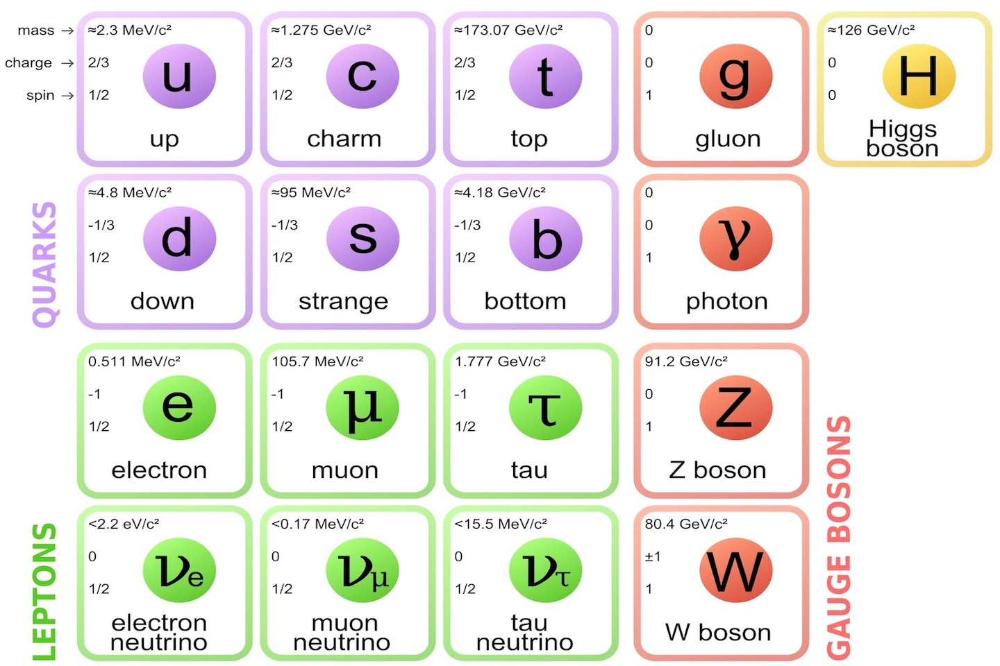
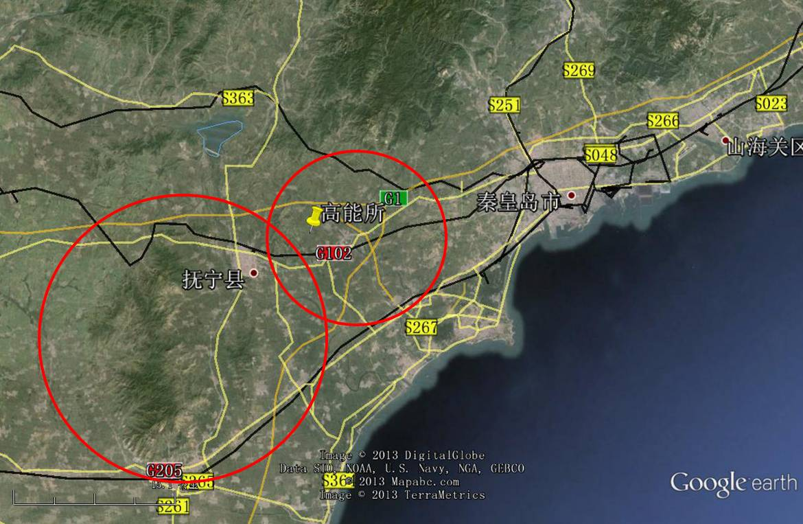

浅谈当代高能物理的瓶颈
粒子物理的标准模型七十年代就在理论上完成了，包括希格斯机制，当时很好地把已经发现的夸克，轻子统一起来，并预言了多个新粒子
确切地说，除了引力没有考虑到之外，可以求解在较高能量下（数学上能用微扰qcd），强力弱力电磁力的所有相互作用，不但最大可能地统一了相互作用，而且可以被高能物理实验验证
然而这个理论不美（参数太多且不协调）也不统一（没有引力），科学家一边在证实，一边希望找到这个理论的问题。可几十年来的实验结论是这样的：
70年代末发现b夸克，胶子，符合标准模型
80年代发现W和Z 粒子，符合标准模型
90年代发现t夸克，tau轻子，符合标准模型
2012年发现希格斯粒子，符合标准模型
至此标准模型的粒子全部被发现。对其性质的测量高度符合标准模型（唯一的例外是中微子质量近似却不等于0，这不影响标准模型计算），然而标准模型还是七十年代的样子，解释不了引力，暗物质，而且参数之间存在自然性问题。
而与此同时，随着预期的新粒子能量不断提高，粒子物理的实验要求逐渐变得苛刻，丁肇中发现c夸克使用了3公里的直线隧道，atlas和cms发现希格斯却用了30公里的环形隧道，c夸克和b夸克发现间隔为3年，t夸克和希格斯发现间隔为17年。
下一代对撞机的尺寸为100公里，从申请经费上来说已经十分困难了，不只中国国内去年有CEPC-SPPC（中国正负电子对撞机- 超级质子质子对撞机）的论战，国际上其他政府也十分犹豫。更糟的是，标准模型已经没有新粒子了，还不知道会不会发现超出标准模型的东西，现在最简单，容易证实的新理论的是超对称，然而我们没有在寻找超对称粒子的工作上发现任何线索。
可以说现在的粒子物理学像二十世纪初“物理学危机”的前夜，有一套几乎无所不包的理论和几朵乌云，但今天的危机不仅是理论物理的危机，更是实验物理的危机，一旦100公里没有决定性发现，新物理和标准模型就可能不在一个量级，还有哪个政府会批准科学家试试1000公里呢？
所以也许物理学会进入一次低谷，又也许爱因斯坦又来救我们了，只是这回他除了想出天才的理论，还要设计一个天才的实验。
注1: 推荐阅读诺贝尔奖得主温伯格 (Weinberg) 的《The Crisis of Big Science》 (大科学的危机)，里面也描述了高能物理的瓶颈，以及美国的超大对撞机项目失败的原因
注2 上世纪初的两朵乌云是以太漂移和黑体辐射，因为这两个实验是受光速不变和量子化的影响，不符合当时很完备的经典物理。现在的几朵乌云指暗物质暗能量，引力量子化，重子数起源等，这些现象不能被标准模型物理解释
注3：标准模型的成果目前仅限于粒子物理，一旦上升到核子物理，因为能标底，又会有新的（尤其是数学的）困难。也就是说人类还不能把标准模型和高温超导这一类低能标的难题联系起来，也不能根据标准模型发明原子尺度的新技术。当然这是另一物理领域（凝聚态）的任务， 并不影响粒子物理继续发展
注4 希格斯粒子在2012年被大型强子对撞机的atlas和cms探测器同时发现（两篇论文的arxiv数据库编号为1207.7214和1207.7235），这几年粗略的测量了其质量和衰变，没发现跟希格斯粒子的预言有不同